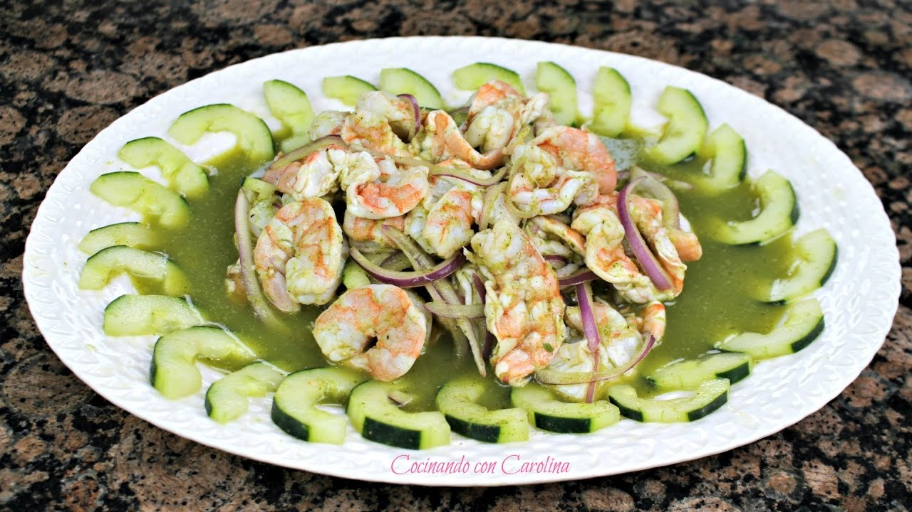

Agua Chile

Ingredientes:
- 1 kilo de camarón mediano, pelado
- Sal y pimienta negra molida, al gusto
- 1 kilo de limón, su jugo
- 1 cebolla morada, en rodajas delgadas
- 4 pepinos, pelados y en tiras delgadas
- 1/2 cebolla blanca chica
- 2 chiles serranos verdes
- 1 manojo de cilantro (sus hojas), desinfectado
- 1 diente de ajo
- 2 pepinos, pelados y en trozos
- 1/4 taza de salsa inglesa
- 1 cucharada de consomé granulado de pollo o camarón
Pasos
- Abre los camarones por la mitad en forma de mariposa
- Desvénalos y ponlos en un refractario; salpimiéntalos
- Vierte encima suficiente jugo de limón como para cubrirlos completamente y déjalos reposar durante 30 minutos dentro del refrigerador.
- Escurre los camarones y agrega encima las rodajas de cebolla morada y tiras de pepino.
- Licúa juntos la cebolla blanca, chiles serranos, cilantro, ajo, 2 pepinos en trozos, salsa inglesa, consomé granulado y un poco de pimienta.
- Vierte sobre los camarones.
- Deja que repose durante 10 minutos más dentro del refrigerador y listo.
Consejo:
- Puedes moderar el picante agregando o quitando chiles serranos a tu gusto.